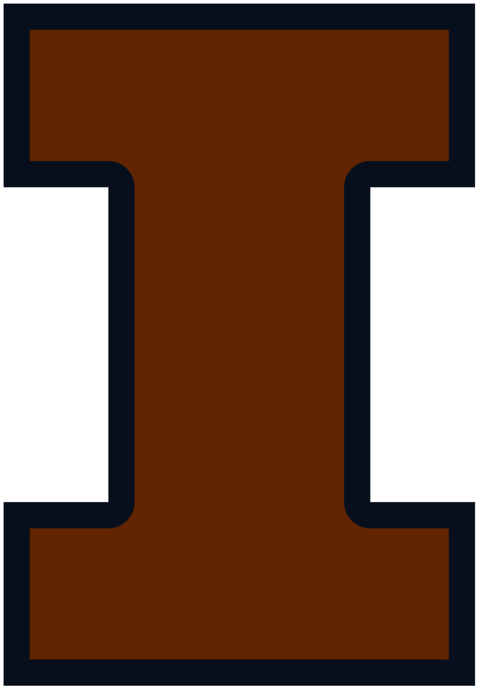

Hi, I'm Sahith!
About Me
Nice to meet you! My name's Sahith Bodla and I'm a student at the University of
Illinois at Urbana-Champaign pursuing a combined Bachelor's and Master's Degree
in Computer Science with a Minor in Economics.
I'm very passionate about exploring cutting-edge advancements in AI/ML, full-stack
development, cloud networks, and system infrastructure. I thrive on tackling
diverse challenges in the software realm and am always eager to expand my
knowledge both in and out of the classroom!
Outside of academics and coding, I enjoy drumming, swimming, bodybuilding,
watching NBA and NFL games, playing the piano, listening to music, and traveling
(the picture on the right is at Hoover Dam!).
Experience
Amazon: Software Development Engineer Intern
May 2025 - Aug 2025
Developed an internal web tool for Buy with Prime's on-call engineers to streamline root cause analysis of system failures and operational alerts. Integrated multiple AWS services and internal APIs to aggregate real-time order and return data, enabling comprehensive cross-service timeline visualization. Built with a Vue.js frontend and Lambda backend (Java/CDK with TypeScript), the tool improved incident resolution speed and provided actionable insights into fulfillment, merchant, and consumer interactions. Also worked on a GenAI-powered timeline summarizer using Amazon's internal MCP architecture to highlight anomalies and critical severities.
Gen Digital: Software Engineer Intern
Jun 2024 - Aug 2024
Worked on developing a system to enhance user privacy and security by removing email trackers from user alias emails and providing AI-driven feedback on the potential risk or scam level of incoming emails. This project aimed to protect users from phishing attempts and other email-based threats, significantly improving their trust and safety. By collaborating with a cross-functional team, we designed and implemented solutions that proactively mitigated risks, ensuring users felt more secure in their digital communications.
OneSpace: Co-founder/Full-Stack Engineer
Feb 2023 - present
Co-founded by a team of 7 to develop a desktop software designed to streamline workflow between various documents and editors. Our innovative workspace is here to transform the way students, writers, and professionals work by enabling them to compartmentalize their analyses. OneSpace has the potential to revolutionize workflows and editing by providing a seamless, integrated environment that enhances productivity and collaboration. We are currently in the initial testing phase with investors and select users (Trello and OrangeQC founders are among our early testers). We hope to launch publicly in the coming months!
Check us out here!CS 222 Software Design Lab: Course Assistant
Jan 2024 - Dec 2024
Advised groups of students on semester-long coding project in language of their choice.
As a software design course assistant, I gain practical expertise, leadership, and strong communication skills while mastering the various frameworks, languages, and developer tools needed for mentoring, scheduling, and grading group-work. This experience not only enhances my technical proficiency but also prepares me for industry challenges by fostering a collaborative environment and honing my problem-solving abilities. It helps me become a better programmer by providing real-world scenarios where I can apply my knowledge, adapt to new technologies, and effectively communicate complex concepts to others.
Projects
Skills
Programming Languages
Python, Java, C++, C, CUDA, JavaScript, Typescript, Golang, Terraform, Terragrunt, HTML/CSS, MySQL, CloudSQL, PostgreSQL, MongoDB, Neo4j, Swift, x86 Assembly, MIPS Assembly, Verilog, Haskell
Developer Tools
Git, Github, Docker, AWS Console, Postman, Firebase, Google Cloud Platform, Visual Studio Code, Google Colab, SQLite, MySQL Workbench, MongoDB Compass, Neo4j Browser, Jupyter Notebook, PyCharm, Xcode, Android Studio
Frontend Frameworks
React, React Native, Streamlit, THREE.js, Bootstrap, TailwindCSS, Vue.js
Backend Frameworks
Django REST, Electron, Express.js, Node.js, Next.js, NestJS, Jest, Sentry, Prisma
Python AI/ML
TensorFlow, Keras, PyTorch, OpenCV, MediaPipe, Pandas, Scikit-learn, Numpy, Sympy, Scipy, Matplotlib, BeautifulSoup, Selenium, Stable Diffusion, Transformers, HuggingFace
Other
Agile, Scrum, Jira, Confluence, Figma, Blender, Sumo-Logic, TeamCity, Raspberry Pi, Arduino, Nsight Compute, Nsight Systems, Unreal Engine, Vercel, Heroku
Education
University of Illinois at Urbana-Champaign
BS in Computer Science with Minor in Economics
Fall 2022 - Spring 2025
Relevant Coursework
- CS 124: Intro to Computer Science I
- CS 128: Intro to Computer Science II
- CS 173: Discrete Structures
- MATH 257: Linear Algebra with Computational Applications
- CS 222: Software Design Lab
- CS 225: Data Structures
- CS 233: Computer Architecture
- CS 361: Prob & Stats for Computer Science
- CS 341: System Programming
- CS 357: Numerical Methods I
- CS 411: Database Systems
- CS 441: Applied Machine Learning
- CS 374: Intro to Algorithms & Models of Computation
- CS 425: Distributed Systems
- CS 439: Wireless Networks
- CS 421: Programming Languages & Compilers
- CS 461: Computer Security I
- CS 483: Applied Parallel Programming
- CS 415: Game Development
- CS 525: Advanced Distributed Systems
Some of my hobbies...

Hiking

Swimming
Bodybuilding